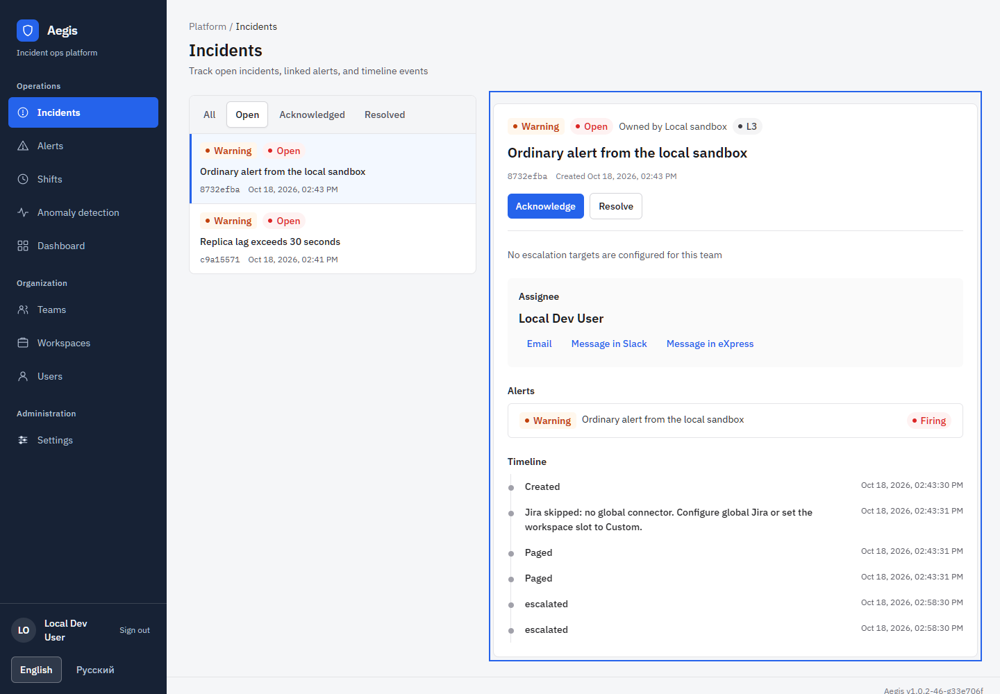

UI refinement review
A shared visual-system refinement with incident triage as the representative workflow. This report records implementation decisions and evidence. The captures below show the running branch with local synthetic sandbox data.
What the screen needs to do
An on-call responder needs to find an incident, understand its severity, status, ownership, linked alerts, and history, then acknowledge, resolve, or hand it off without losing their place. This task model comes from the repository brief, not new user research.
Observations and changes
| Observed issue | Implemented change |
|---|---|
| Small, pale navigation and an almost empty utility header | A 240px dark rail groups Operations, Organization, and Administration. Account and language controls sit at its foot. The desktop header is removed. |
| 10px table headers and 11px status text | 14px table headers, record labels, severity, status, navigation, and actions. Form values use 16px. Secondary timestamps remain compact. |
| Detail actions squeeze long incident headings | The heading gets the full pane width; actions sit below it. Timeline events share one chronological rail instead of separate boxes. |
| Selecting a record reloads the queue | Selection and fetching are separate. Queue rows stay mounted during refresh, with localized loading and retry feedback. |
| Phone detail appears below the entire queue | Selection opens a detail view with Back to incidents. The URL carries selection and filter state; browser history and row focus are preserved. |
| Handoff and bounce notes clear before the request succeeds | Actions await the result. Failure keeps the form and note; pending requests disable repeat actions and edits. |
| Dialogs claim modality without managing focus | Native modal dialogs provide background inertness, a visible close action, initial focus, Tab containment, Escape, and focus restoration. |
| Native modal layering could hide page-level errors | Feedback moves into the active dialog, scrolls into view, and occupies normal layout space so it cannot cover Save. When the dialog closes, receipts return to the page. |
| Repeated field labels can create duplicate IDs | React-generated unique IDs associate labels, hints, and errors; invalid state is exposed to assistive technology. |
| Phone alerts start roughly 1500px down the page | Search, severity, and status stay visible. Advanced filters and saved views use a disclosure. Records precede analytics. The first record starts at 555px in the unfiltered 390px view. |
| Phone alert status and received time sit off-screen | The same semantic table becomes structured rows, retaining severity, title, status, received time, and expandable long text. |
| Schedule names disappear to the right on phones | A phone agenda shows names, dates, daily coverage times, and UTC context. Desktop keeps the timeline and month grid. |
| Schedule participants and reorder arrows have no meaningful names | Checkboxes use member labels. Reorder actions name the person and direction, disable at boundaries, and visibly update the order. |
| Workspace integration controls are cramped on phones | Labeled rows retain mode, status, and Configure actions at 320px. |
| Enlarged Russian text overflows or overlaps | Filters, pagination, badges, and calendar controls wrap. Subtitle spacing scales with text. These views were rechecked at 320px with 200% root text. |
Rendered captures
Real Chrome screenshots from 20 October 2026. Incident captures use the Open filter. The phone alert capture searches for “Checkout value”; browser checks also covered the unfiltered list and no matches. All three isolated review incidents were resolved after testing. Scroll a capture to inspect the full page, or open its image.



More evidence: phone queue, phone detail, failed save inside a native dialog, Russian at 320px, Russian agenda with 200% root text, and browser check results.


Visual direction
The chosen composition uses a quiet dark shell around opaque white working surfaces. Aegis Blue marks actions and selection; severity colors retain their established meaning. Plex Sans carries UI text, with Plex Mono reserved for identifiers. Six-to-eight-pixel corners, light separators, and a selected-row edge keep the system consistent.
A larger overview-card composition was considered and set aside because it would displace the incident queue. The revision adds no synthetic metrics, decorative charts, or theme switch.
#172235#F5F6F8#FFFFFF#2563EBCalculated token contrast includes 8.85:1 for muted navigation text on the rail, 5.17:1 for white on Aegis Blue, and at least 4.79:1 for the adjusted P2, P3, and resolved text/background pairs. These calculations cover those pairs only.
Preview repair
The root-launched preview initially served Tailwind base CSS without app utilities because configuration and content paths depended on the process working directory. PostCSS now loads the configuration by absolute file URL, and Tailwind scans content relative to its configuration. A regression check failed before the fix and passes from both repository root and web-app directory. After restart, the same preview URL serves navigation, canvas, responsive layout, touch-target, and dialog styles. All six shifts API requests returned HTTP 200 through the preview proxy. The sandbox has one active override and no rotation schedule; the shifts route now retains its on-call banner and override calendar in that state instead of replacing existing coverage with an empty schedule screen. A page regression covers this case.
Verification and limits
- Source review covered the shell, shared controls, tables, dialogs, incident queue, detail, and API state transitions.
- The Makefile's anomaly sandbox was confirmed running. This branch's Vite frontend runs separately at
http://127.0.0.1:3010and proxies its API, auth, and module paths to the existing synthetic-data backend on port 18080. Backend health and frontend HTML returned HTTP 200. The rendered review used this frontend and backend. - Web lint, TypeScript, locale parity (669 keys), style generation from both working directories, production build, and Storybook build passed. All 342 tests passed across 59 files. Coverage passed the configured thresholds: 95.35% lines/statements, 91.96% functions, 88.41% branches. HTML local links and duplicate IDs were checked; git diff --check passed.
- Go vet, package/API/worker builds, and all Go tests passed. Local HTTP fixtures were rerun outside the Windows sandbox. Coverage gates passed for pkg and worker at 91.0%; the API gate failed at 85.8% against 90%. No Go source changed. The full repository gate is therefore not green. Commands were run as PowerShell equivalents of the Make targets because Make is unavailable.
- Playwright created isolated local webhook alerts and completed acknowledge and resolve through the UI, including keyboard activation and long-title reflow. Native selects exposed the expected options; failed-save receipts stayed inside the dialog. Error and empty responses were intercepted in the test browser only. Storybook also includes responsive, Russian, and long-title fixtures.
- Rendered review covered incident queue/detail, alerts, team shifts and schedule dialogs, teams, workspaces and details, dashboard, users, settings, and account. Russian incident, alert, and shift views were checked at 320, 768, and 1440px. Root text enlargement approximates text resizing; it is not an operating-system zoom or screen-reader audit.
- No user study, field performance measurement, or full accessibility audit was performed. Vite still reports an application chunk larger than 500kB.
Reference evidence
The supplied design guide identifies Attio record detail for related identity, evidence, and actions; Float scheduling for content-led composition; and Linear interface detail for control precision and density. Their image URLs were attempted on 20 October 2026 but could not be inspected through the available web tool. Their visual observations remain guide-supplied, not independently verified in this run.